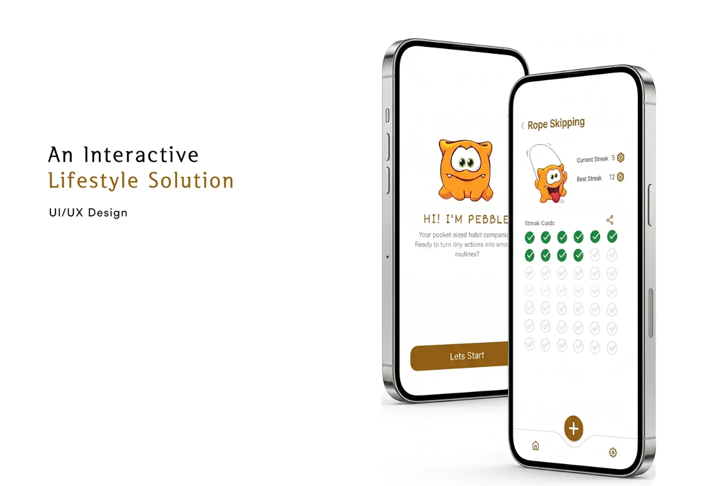
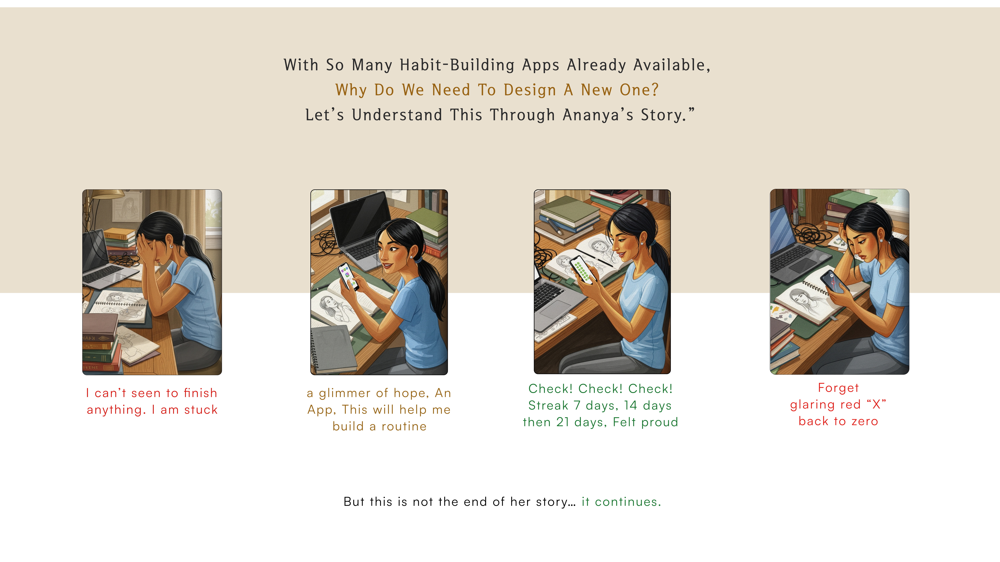
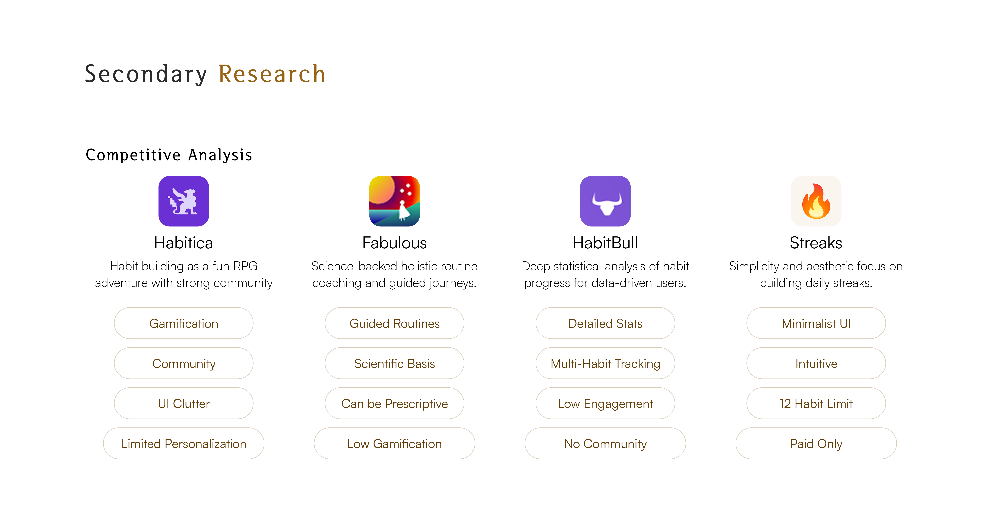
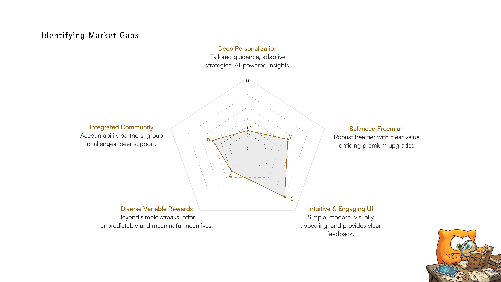
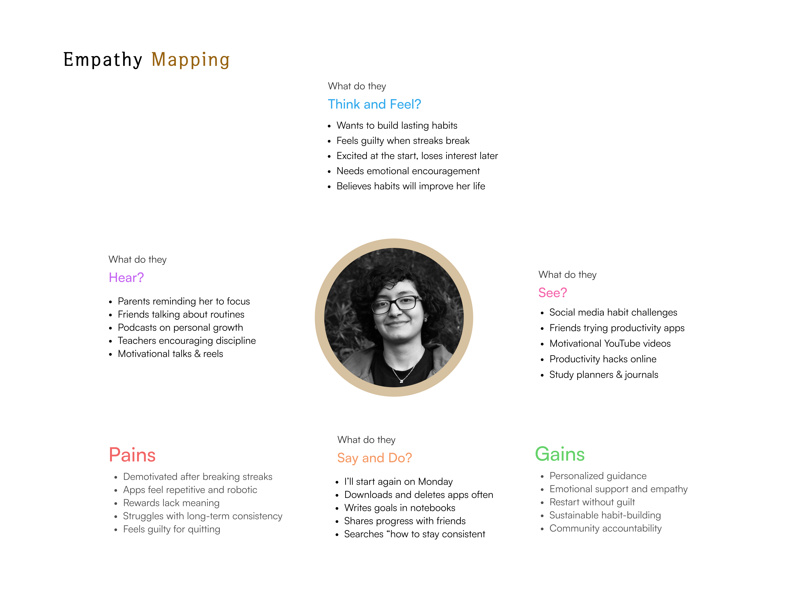

Pebble: a habit companion that forgives.
Most habit apps reset your streak to zero after one missed day. Pebble lets you repair it, or choose a small punishment, so a bad day doesn't end the habit.

Ananya had a 21-day streak. Then she missed one day.
Ananya, a student, starts a new habit full of hope. Day after day, her streak grows to 21.
She misses a single day. The app shows a glaring red X.
Her streak resets to zero. Three weeks of effort are gone, and starting again feels pointless.

When a streak breaks, people feel like failures.
People struggle to maintain long-term goals and rely on habit apps for streak-based motivation. When a streak breaks, they feel like failures, and most apps simply send them back to zero.

Existing apps reward streaks. None of them help you recover.
I compared Habitica, Fabulous, HabitBull and Streaks, read app store reviews, interviewed 18 people aged 18 to 35 and ran a survey with 122 respondents. Gamification motivated beginners but lost its effect over time, and no app had a plan for the day after a miss.



Two people, one shared fear: losing progress.
Ananya, a student, and Pulkit, a working professional, both start habits with energy and both quit after a miss. Their interviews were grouped in an affinity map, then turned into personas, an empathy map and a Hook Model.



“Thik karna hoga jo galti hui hai, nahi to saja milegi.”
Fix the mistake, or take the consequence. That childhood rule became the repair and punishment method. A missed day shouldn't erase the past, but it shouldn't be ignored either. In interviews some people asked for a second chance, and others said, “I feel like I need a penalty to stay on track.”
Ideation, flow and wireframes.
The first concept, named Velora, was pitched as "an interactive lifestyle solution". It had no character, and its bright yellow on white failed contrast checks. Research pointed to recovery after a miss, so the concept became Pebble, with a friendly monster guide.


Replace the hard reset with a choice: Repair or Punishment.
After a missed day, users either repair the streak by building forward, or accept a small punishment that costs double days, and the habit carries on. Users pick their method during onboarding.
The missed day stays red. Complete the habit 5 days in a row and the red cross turns green. The streak continues as if the day was never lost.
For people who want a second chance and learn by doing better.Accept the consequence. Two past days turn grey and are subtracted from the streak, but everything before them stays. One miss costs double, never everything.
For people who stay on track when a miss has a cost.
Why each decision looks the way it does.
{{ r.why }}
Evidence: {{ r.ev }}A small system taken from the final screens.
Colours, type and components were pulled from the Figma screens so the prototype and the case study match them exactly.
The final app, built from that system.
The prototype is rebuilt from my Figma screens and their design system: Poppins type, one brown for actions and headings, green for done, red for missed, pill buttons and the monster guide on every screen. All screens below are live; tap through them.

Users loved the monster and the repair idea.
I tested the prototype with two users. Both understood repair and punishment without help. Text size, spacing and the navigation icons needed work, and I fixed them in the final screens.

What I learned
The emotion after a missed day mattered more than any feature. Designing for recovery, and letting people pick how strict to be with themselves, made the app feel like a companion rather than a scoreboard. Testing showed small things still matter: readable text, spacing and clear icons.